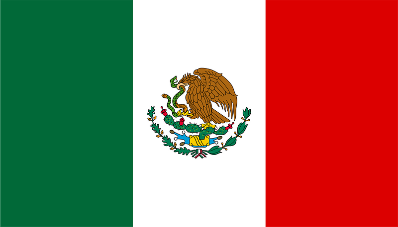

THE AMERICAS
CANADA
Canada has two official languages, and distinct comics cultures have developed in English and French Canada. The English tends to follow American trends, and the French, Franco-Belgian ones, with little crossover between the two cultures.
In English Canada many cartoonists, from Hal Foster to Todd McFarlane, have sought to further their careers by moving to the United States; since the late 20th century increasing numbers have gained international attention while staying in Canada. During World War II, trade restrictions led to the flourishing of a domestic comic book industry, whose black-and-white "Canadian Whites" contained original stories of heroes such as Nelvana of the Northern Lights as well as American scripts redrawn by Canadian artists. The war's end saw American imports and domestic censorship lead to the death of this industry.

UNITED STATES
American comic books are one of the three major comic book industries globally, along with Japanese manga and the Franco-Belgian comic books.
MEXICO
Another important influence has been the work of José Guadalupe Posada whose satirical cartoons helped create a political identity of visual art. Political satire was quite a strong movement during the Porfiriato (1884–1911). Many newspapers became almost legendary because of their political comics and vignettes that were published during this era and during the subsequent Mexican Revolution (1910-1920). As a result of the harsh government repression, the political cartoon ("caricatura política") practically became the only means of free expression in those turbulent years.
BRAZIL
Brazilian comics (known in Brazilian Portuguese as HQs, gibis, revistinhas, historietas, quadrinhos or tirinhas) started in the 19th century, adopting a satirical style known as cartoon, charges or caricature that would later be cemented in the popular comic strips.
ARGENTINA
Argentine comics (Spanish: historietas) are one of the most important comic traditions internationally, and the most important within Latin America,[1] living its "Golden Age" between the 1940s and the 1960s. Soon after, in 1970, the theorist Oscar Masotta synthesized its contributions in the development of their own models of action comics (Oesterheld, Hugo Pratt), humor comics (Divito, Quino) and folkloric comics (Walter Ciocca) and the presence of other artists (Hugo Pratt and Alberto Breccia).[2]